<mat-toolbar color="primary">
    <a routerLink="" matTooltip="Agorà">
      
    </a>
  <button mat-icon-button routerLink="users" matTooltip="Utenti">
    <mat-icon>group</mat-icon>
  </button>
  <button mat-icon-button routerLink="posts" matTooltip="Post">
    <mat-icon>newspaper</mat-icon>
  </button>
  <button mat-icon-button class="profile" routerLink="profile" matTooltip="Profilo">
    <mat-icon>person</mat-icon>
  </button>
  <button mat-icon-button (click)="logout()" matTooltip="Logout">
    <mat-icon>logout</mat-icon>
  </button>
</mat-toolbar>

<router-outlet></router-outlet>

